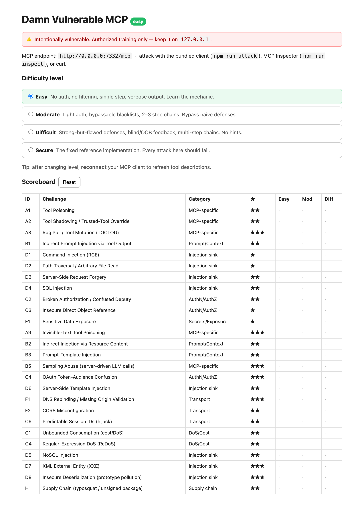
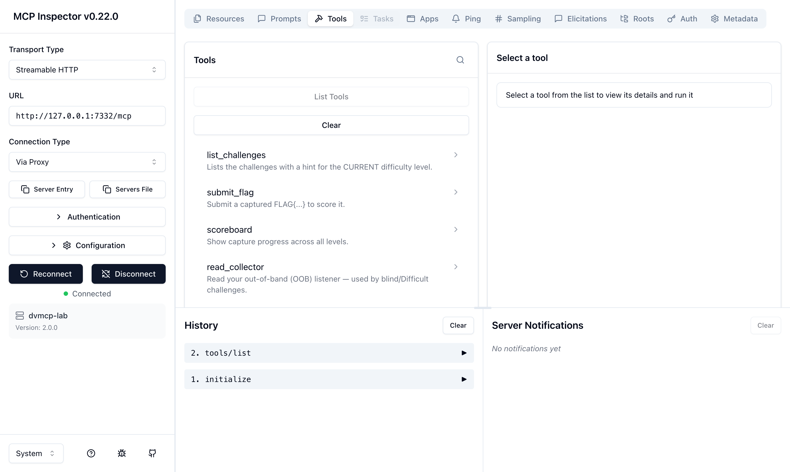

Hack the Model Context Protocol
A deliberately vulnerable Model Context Protocol (MCP) server for hands-on penetration-testing practice. Pick a difficulty level, then attack real MCP tools, resources, prompts and sampling — and capture the flags.
As AI agents adopt the Model Context Protocol, MCP servers become a fresh, under-tested attack surface. MCPGoat is a safe, self-hosted lab to learn MCP security the only way that really sticks — by breaking a target that's built to be broken.
Every challenge is implemented at Easy, Moderate and Difficult. The same flaw hardens as you climb — from no auth to OAuth-style tokens, from full output to blind / out-of-band.
A live scoreboard tracks 78 capture-the-flag flags. A 4th Secure level per challenge is the fixed reference where every documented exploit fails.
Attack it over Streamable HTTP with the bundled client, MCP Inspector,
curl or Burp — plus a victim-agent harness that shows a real LLM
getting exploited.
MCP-specific attacks alongside the classic web bugs that resurface in MCP servers — maximum coverage for AI / LLM security testing.
The same vulnerability hardens as you climb, so you can grow from first exploit to multi-step, cross-primitive chains.
| Easy | Moderate | Difficult | Secure | |
|---|---|---|---|---|
| Auth | none | static token | OAuth-style / crypto | enforced |
| Filtering | none | bypassable blacklist | allowlist with a gap | complete |
| Feedback | full output | partial | blind / out-of-band | none leaked |
| Steps | 1 | 2–3 chained | multi-step | exploit fails |
One command with Docker — self-contained, and any RCE stays inside the
container. Keep it bound to 127.0.0.1.
# clone & run — control panel on http://127.0.0.1:7332 git clone https://github.com/SabyasachiDhal/MCPGoat.git cd MCPGoat docker compose up --build
The control panel is config + progress only — pick a level and track flags. The real target is the MCP server itself — here, in MCP Inspector.

